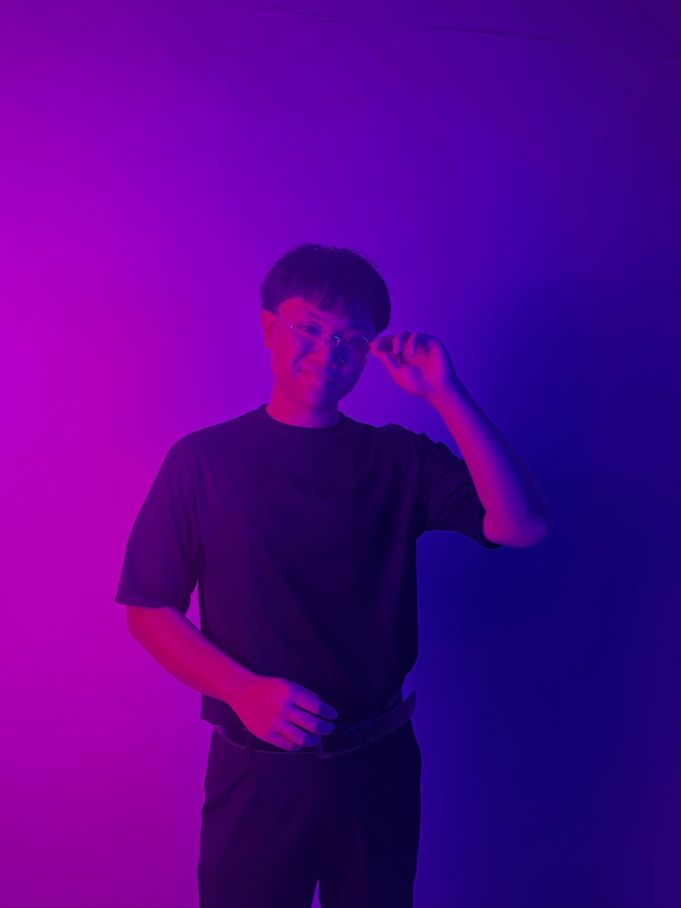
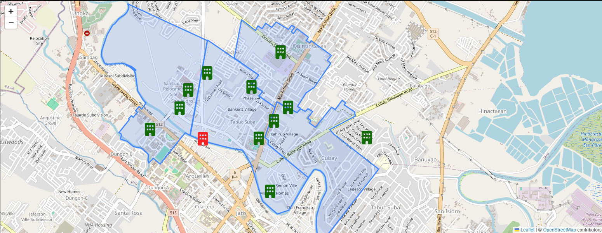

Welcome to My Portfolio
Hi, I'm Rej, a 4th year Computer Science student from Central Philippine University. Explore my work and feel free to reach out!


Barangay Residents' Demographic Profiling and Effective Evacuation Planning
This my thesis project. A website built to input the data of every residents and families in a barangay. It also includes an evacuation planning module such as nearest
evacuation center and determining max capacity of evacuation centers to avoid overcrowding
Note:
To login use
username: admin
password: admin

Eula Lawrence
A website dedicated to a video game character named "Eula Lawrence" from Genshin Impact
Visit